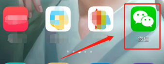
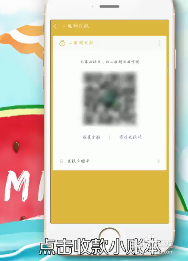
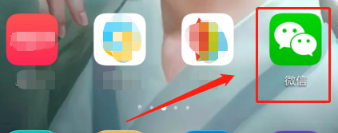
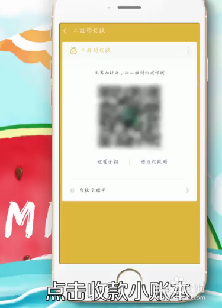

设置小微商户
步骤一：
首先我们需要打开我们的手机，在手机上打开“微信”这款社交APP，接着我们就会进入到微信的主页面了。

步骤二：
在微信的主页面右上角有一个“收索”号的小图标，我们点击一下这个小图标，接着会弹出一个菜单栏，输入"收款小账本" 在里面选择 "收款小账本"。

步骤三：
进入收款小账本 页面点击”店员管理” 如图。

步骤四：
保存小微图片即可。

首先我们需要打开我们的手机，在手机上打开“微信”这款社交APP，接着我们就会进入到微信的主页面了。

步骤二：
在微信的主页面右上角有一个“收索”号的小图标，我们点击一下这个小图标，接着会弹出一个菜单栏，输入"收款小账本" 在里面选择 "收款小账本"。
步骤三：
进入收款小账本 页面点击”店员管理” 如图。
步骤四：
保存小微图片即可。
